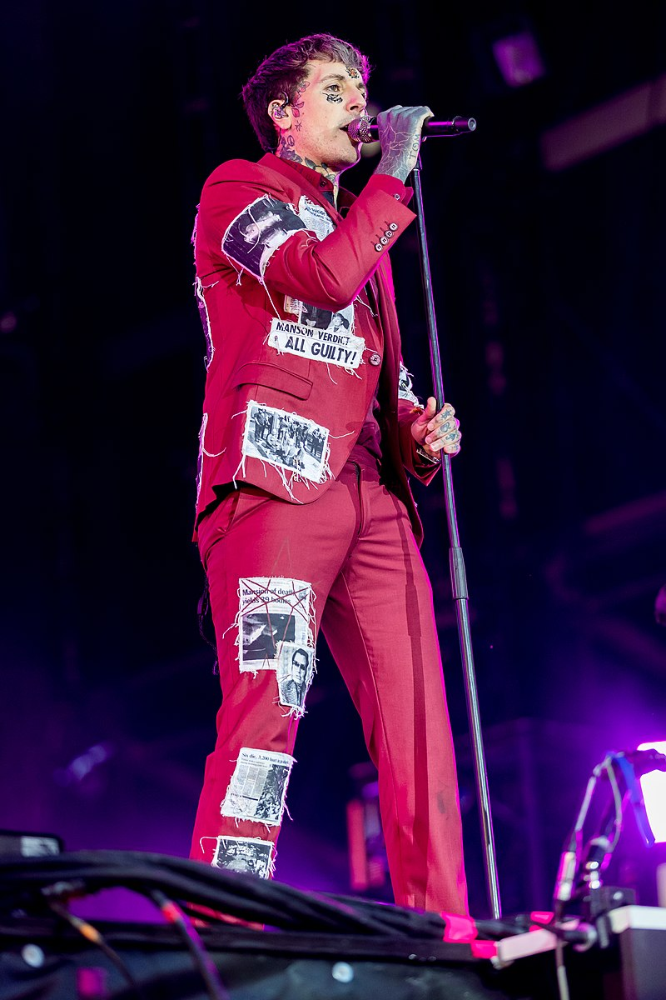

Bring Me the Horizon (abreviado BMTH) es una banda británica de rock proveniente de Sheffield, Inglaterra. Se formó en 2003 con Oliver Sykes como vocalista, Lee Malia como guitarrista líder, Curtis Ward como guitarrista rítmico, Matt Kean como bajista y Matt Nichols como baterista.
El estilo musical de sus inicios así como el de su álbum debut Count Your Blessings era el deathcore, pero en sus siguientes discos adoptaron un estilo más ecléctico del metalcore. Sin embargo, su penúltimo álbum That's The Spirit marcó un nuevo giro en su estilo musical al producir una obra no tan agresiva y mucho más inclinada hacia el Pop Rock con un sonido más comercial, pero actualmente con su más reciente álbum Amo han experimentado con sonidos nuevos así como el Electropop o el Power Pop, y combinaciones entre otros géneros del Pop y la Electrónica, está banda evoluciona en sonido y personalmente para los integrantes de la banda.
|

Oliver SykesSe trasladó a Australia con sus padres Ian y Carol Sykes a la edad de 5 años, moviéndose entre Adelaida y Perth en un transcurso de tres años. A los 8 años regresó al Reino Unido. Cuando era adolescente, asistió a la secundaria de Stocksbridge, la misma a la que iban los miembros de la banda Arctic Monkeys. |
Lee MaliaNació el 4 de junio de 1984 en Sheffield, en su niñez comenzó a tocar guitarra por su maestro Frank White. En la preparatoria conoció al vocalista Oliver Sykes desde ahí formaron la banda Bring Me The Horizon, iniciaron como una banda de Deathcore. En 2017 Lee se casó con su novia Deni Marie McGonigle. |
Matt KeanNació el 2 de junio de 1986 en Sheffield. Empezó tocando guitarra aunque cuando entró a la escuela secundaría empezó a tocar el bajo. Cuando Matt entró a la preparatoría conoció a Oliver Sykes, después de hacerse amigos decidieron crear la banda Bring Me the Horizon juntó con el guitarrista Lee Malia y el baterista Matt Nicholls. |
Matt NichollsNació el 22 de marzo de 1986 en Matlby. La idea de tener una banda empezó en 2002 con Sykes, Kean y Malia, compartiendo gustos musicales parecidos. Antes de tener la formación completa, tocaron varias canciones que hicieron por diversión. Matt tenía gustos por el metal sueco lo cual le sirvió como inspiración en el primer álbum. |